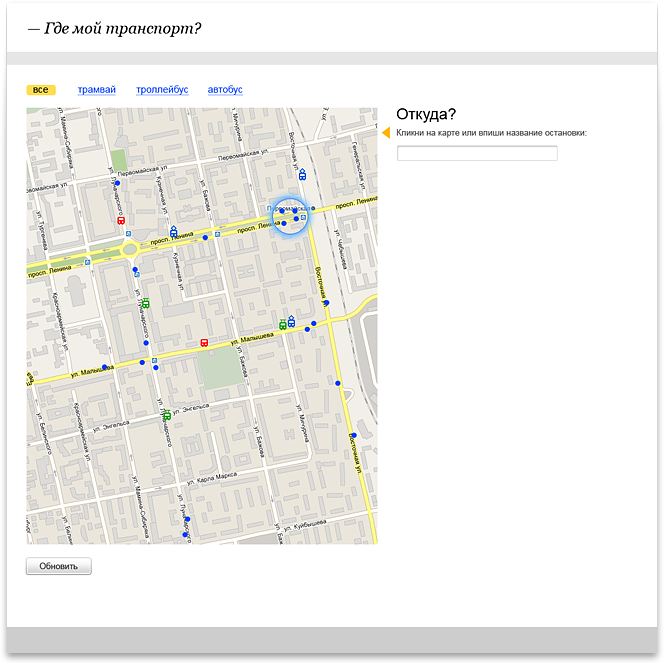
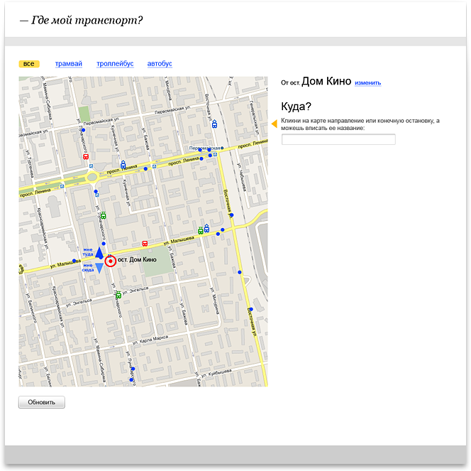
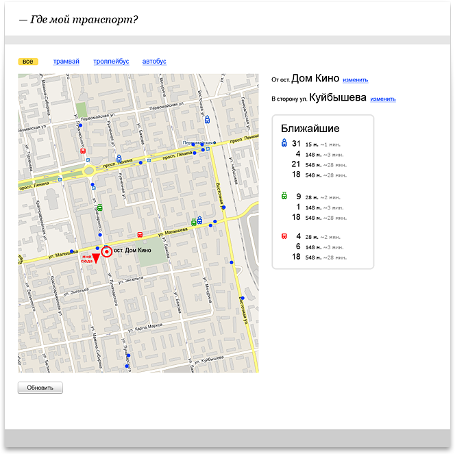
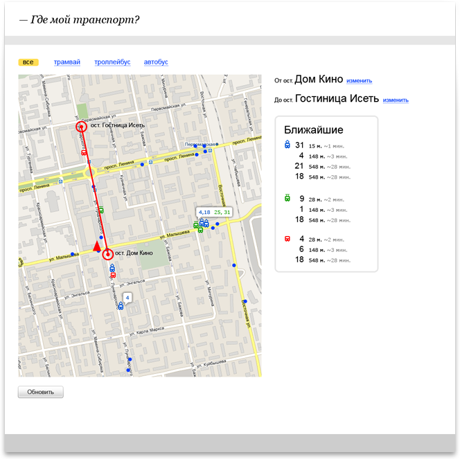

|
Сервис позволяет узнать, где находятся ближайшие трамваи, троллейбусы, автобусы в данный момент времени. Кроме того, можно узнать, на чем доехать до нужной остановки, и когда подойдет нужный маршрут.
    |


Система NAUMEN SD 
Сайт интернет-магазина Brozex 
Cервис автоматизации бизнеса it‑аутсорсеров SmartNUT 
Интерфейс мессенджера QutIM 
Редизайн системы NauDoc |